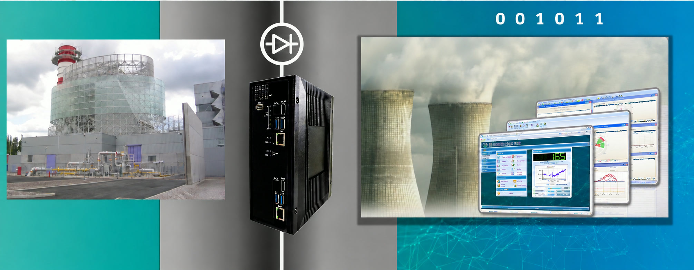

Power Plant Emissions Reporting to the Regulator
How a power plant delivers continuous, real-time emissions data to the Ministry of Environmental Protection without exposing its OT network
1The Problem
Power plants are under growing pressure to show, not just state, that they meet environmental limits. Regulators increasingly expect emissions to be measured continuously and reported in real time, so they can spot problems as they happen rather than months later.
Meeting that expectation means connecting monitoring equipment inside the plant to an outside system. But the plant's operational technology (OT) network runs critical generation processes. Any connection to an external cloud service is also a possible way in for attackers.
2The Challenge
A power plant uses a Continuous Emissions Monitoring System (CEMS) to measure stack emissions. The Ministry of Environmental Protection requires continuous, real-time access to that data through a cloud-based monitoring application.
The plant had to make the data available outside its walls while keeping its OT network completely closed to the internet. A conventional connection would create a two-way link between the CEMS and the cloud. If the cloud application or anything on the internet side were compromised, that link could lead straight back to the plant.
The plant needed a way to comply that added no new connectivity risk.
3The Solution
A Terafence gateway was installed between the CEMS and the cloud application. It terminates every session and passes emissions data outward only, so the regulator's application receives a live feed while nothing can travel back toward the plant.
- Real-time emissions data from the CEMS to the Ministry's cloud app
- All sessions terminated at the Terafence gateway
- Hardware-enforced one-way flow, with no inbound path to the OT network
- Supports continuous external data analysis by the regulator

4The Impact
The plant meets its regulatory reporting obligation in real time and keeps its OT network sealed.
Compliance reporting without connectivity risk: the regulator reads, and nobody writes back.
Regulatory compliance.
The Ministry receives live emissions analytics, continuously.
OT network protected.
Nothing on the internet side can reach the plant through the reporting link.
Transparency without exposure.
The plant can share data openly with the regulator without increasing cyber risk.
A repeatable model.
The same approach can support other regulatory and external reporting needs.
Tell us where your boundary sits
Say what has to cross it. We will help you choose the right device and plan a pilot.